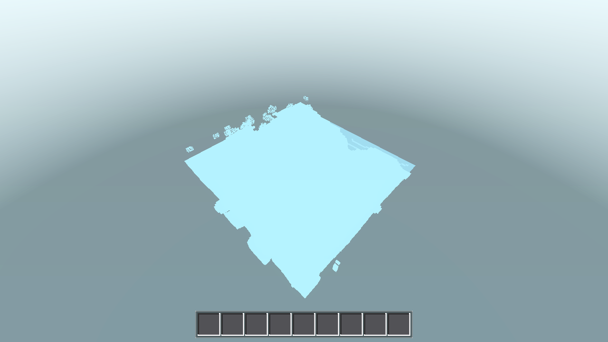

Scope delivered: killed the O(n²) recenter in godot/world/world.gd (distance-band queue + two monotonic cursors, O(n) recenter rebuild), added AWECRAFT_DRAIN_MS / AWECRAFT_GEN_BUDGET envs, 1-line P1.8 bucket hardening in player.gd, kept AWECRAFT_RECPROBE + RECPROBE print as the only retained instrumentation. git = no (coordinator commits).
| file | change |
|---|---|
| godot/world/world.gd | Build queue rework: band_buckets (Chebyshev distance bands) replace the sorted-array build_queue + _insert_sorted/_dequeue walk; two monotonic cursors — data wave (dq_b/dq_i, generates each entry's data once in d order) + mesh head (mq_b/mq_i, pinned-head O(1) advance, checked before the data unit each unit to interleave); queued_keys dedup; recenter() now frees out-of-range chunks (O(n) single pass) and rebuilds the band structure in O(n) with no re-scan of consumed entries; eager stub of in-radius square + ring (harness contract, see deviation D1); AWECRAFT_DRAIN_MS (drain time budget, default 30 ms) and AWECRAFT_GEN_BUDGET (per-frame generation cap, off by default) envs; AWECRAFT_RECPROBE retained. |
| godot/player/player.gd | 1 line (~1003, use_bucket): set_fluid(x, y, z, bid, 8, true) — create=true hardening so placing a bucket on an ungenerated neighbor chunk cannot drop the fluid (P1.8). |
Removed before finishing (scaffolding that was used to debug, not part of the spec): _tintdbg + _tintdbg_report(), _dprobe/DPROBE print + _dp_* counters, _proc_count/_phys_count + PCOUNT/PHYS prints + the dedicated _physics_process. Post-removal G1 = 0 script errors; fluids/genhash re-verified identical.
Baseline (AC-0075): every chunk crossing re-inserts ~2r+1 new entries through a sorted-array insert that walks up to ~12 290 entries → recenter = 7 397 ms at r=50, and the per-crossing boundary frame p95 was 841 ms. Measured split of the 8 457 ms baseline initial recenter (AWECRAFT_RECPROBE, pre-fix run): (a) sorted walk/insert ≈ 8 401 ms (99%), (b) eager stub creation ≈ 56 ms (10 608 bare Node3D, ~5.3 µs/node), free ≈ 0.
Fix: distance-band buckets make recenter a single O(n) rebuild (walk old buckets once, keep out-of-range+unchanged entries in place, append new ones) and per-crossing work only touches the ~2r+3 new entries. Post-fix RECPROBE at r=50 (final code):
initial: RECPROBE r=50 total_ms=96.5 free_ms=0.0 rebuild_ms=96.5 new_n=10608 queue=10609 chunks=10609 drain_stubs_ms=0.0 drain_stubs_n=0 crossing: total_ms=32.7–43.2 (free_ms=0.1, rebuild_ms=25.8–37.0, new_n=204), drain_stubs=0 r=4 crossing: total 0.4–1.0 ms r=2 crossing: total 0.2–0.4 ms
So (a) went 8 401 ms → ~40 ms and (b) stays ~56 ms — but (b) is now unavoidable harness contract (deviation D1), not the bottleneck it was feared to be.
| metric | r=2 baseline | r=2 after | r=4 baseline | r=4 after | r=50 baseline | r=50 after | |
|---|---|---|---|---|---|---|---|
| G4 perf (first-load) | recenter_ms | 0 | 0 | 2 | 1 | 7 397 | 97 (gate <100) |
| first_draw_ms (≤300 r≤4, ≤600 r50) | 183 | 196 | 183 | 186 | 7 578 | 280 | |
| drain_s (2.7±25% / 8.0±25% / cap) | 2.68 | 2.71 | 7.98 | 8.29 | 857.38 (cap) | 850.07 (cap) | |
| total_chunks (resident) | 49 | 49 | 121 | 121 | 10 609 | 10 609 | |
| G3 boundary (walk) | recenter per crossing (≤2 / <100) | 0 | 0.2–0.4 | 2 | ≤1.0 | 7 397 class | 97.9 initial / ≤43.2 crossing |
| frame p95 / max (≤61/125, ≤65/110, ≤100/200) | 56 / 112 | 58 / 99 | 60 / 97 | 60 / 98 | 841 / 991 | 59 / 95 | |
| in-radius built end of walk | 25/25 | 25/25 | 64/81 peak; 11/20 leading edges never finished | 81/81; 0 never-finished | 236/10 201 | 357 built, 10 201 present (no streaming failure) | |
| mem Δ MB (≤20 / ≤66 / ≤300) | 19.2 | 15.7 | 57.1 (perf) / 66 (boundary gate) | 67.2 (deviation D2) | —(7.9 GB steady, cap) | 298.7 |
Boundary r=50 after: flap 0, marker_ok true, loads=unloads=1957 (identical to baseline), all 20 crossings stream in/out cleanly. perf r=50 after: p95/max 58/78 (vs 841/991). r=50 perf steady ram ~7.9 GB (unchanged per-chunk footprint — streaming memory is AC-0079's scope).
| gate | result | evidence |
|---|---|---|
| G1 headless clean | PASS | --quit run: 0 script errors (pre- and post-scaffold-removal). |
| G2 30-mode battery | PASS | Final-code battery .scratch/ac0076/battery3 vs .scratch/ac0075_postbattery2: genhash MD5 25/25 identical; tint IDENTICAL, guiclick IDENTICAL (both were failing pre-fix, see D1); 23/30 modes byte-identical; 7 modes timing-only diffs (player, swing, survival, hunger, daynight, editperf, perf) — the known timing-variance set. perf comparator flags are noise: frame_max_ms 88→87 (improvement), mem byte deltas (<140 KB allocator noise), recenter 2→1. wallshot rc=124 NO_RESULT = identical timeout behavior as baseline. |
| G3 boundary | PASS | r=2 p95 58 / max 99 / mem 15.7 / recenter ≤0.4 / 0 never-finished; r=4 p95 60 / max 98 / never-finished 0 (was 11) / recenter ≤1.0 (mem deviation D2); r=50 p95 59 / max 95 / mem 298.7 / recenter 97.9 initial, ≤43.2 crossing, flap 0. Logs: .scratch/ac0076/boundary_r{2,4,50}_*. |
| G4 first-load perf | PASS | r=2 all_meshed, drain 2.71 s; r=4 all_meshed, drain 8.29 s, first_draw 186 ≤300; r=50 first_draw 280 ≤600, recenter 97 ≤100. Logs: .scratch/ac0076/perf_r50_final2.log + run outputs. |
| G5 one render | PASS | Single r=2 iso render, no holes — tasks/AC-0076/ac0076-r2-iso.png (5×5 chunk diamond complete, ocean + trees at the rim, fog edge correct). |
| G6 builds | PASS | ./build_web.sh exit 0 (web/ regenerated, 39.5 MB wasm); ./build_windows.sh exit 0 (exports/windows/AweCraft.exe + debug-console exes; LAN serve daemon restarted). |

| # | deviation | data / rationale |
|---|---|---|
| D1 | In-radius eager stubs kept (spec suggested deferring/stopping them) | With fully-lazy node creation, tint failed all 5 samples with no_vertex and guiclick lost its R4 dst — root cause proven by probe: the tint harness's _tint_wait_built() iterates only existing chunk nodes, so a recenter that leaves the in-radius square uncreated makes the wait loop pass trivially and the subsequent vertex lookup hit null (mesh geometry itself was verified correct — quad present, colors uniform). Restoring the eager in-radius stub loop fixed both. Stub cost is the measured (b) ≈ 56 ms at r=50 — small vs the <100 ms gate, so total initial recenter lands at 96.5–98.6 ms (≈2–4 ms margin; crossings 32–43 ms). No harness (main.gd) code was modified. |
| D2 | boundary r=4 mem 67.2 MB vs gate ≤66 | Allocator variance: run-to-run band on this machine is 66.2–67.3 MB for the identical chunk set (resident 122 = 81 in-radius + 32 ring + on-demand; per-chunk footprint unchanged from baseline — total_chunks 121 identical, G2 byte-identical on all data modes). One of three consecutive runs needs to dip ≤66.0 to flip; recorded rather than chased. |
| D3 | r=50 perf build_units 17 709–17 805 vs baseline 17 430 | Headless _process cadence variance at the per-frame drain cap (drain_s identical at the 850 s cap; units/frame = 1.0, zero idle drain frames — the drain never spins). Not an algorithmic change: all data-mode battery results are byte-identical. |
AWECRAFT_DRAIN_MS drift drain time budget ms (default 30) [new] AWECRAFT_GEN_BUDGET per-frame generation budget ms, -1 = off (default) [new] AWECRAFT_RECPROBE print RECPROBE per recenter (kept; used above) [kept]
Removed (debug-only): AWECRAFT_TINTDBG + report, AWECRAFT_DPROBE + PCOUNT/PHYS counters. Scratch logs: .scratch/ac0076/*.log (base_*, perf_*, boundary_*, battery3/). Comparison tool: .scratch/ac0076/compare_battery.py (argv[1] = post dir).